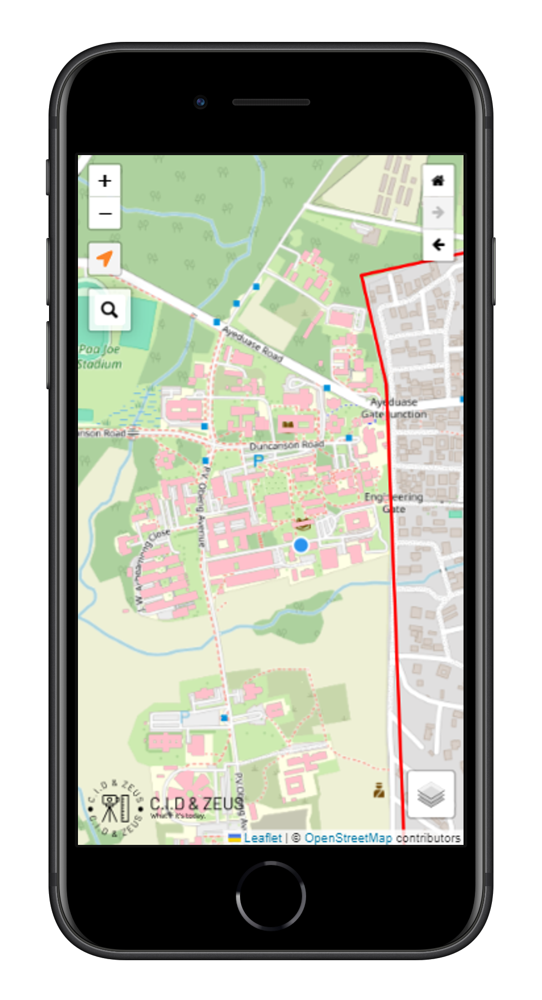
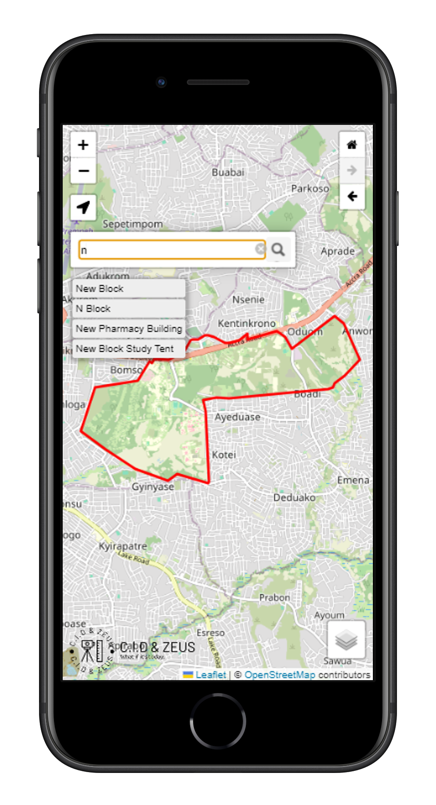
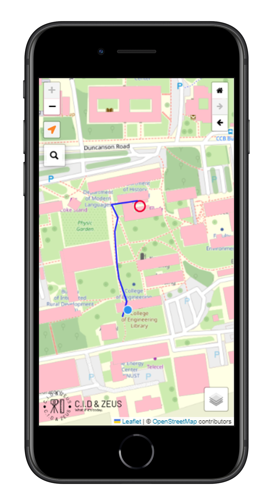

Discover Places Within
KNUST
Explore and interact with maps using our advanced web application.
View MapFeatures
Interactive Maps
Experience seamless map navigation and interaction within KNUST.
Geocoding
Find locations quickly with our powerful geocoding feature.
Shortest Path
Calculate the shortest path between your location and the searched feature effortlessly.
How It Works
Step 1: Locate Yourself
Click the "Locate" button to center the map on your current location.
Step 2: Search for Locations
Use the search bar to find specific buildings or locations on the map.
Step 3: Find the Shortest Path
The web app calculates and displays the shortest path from your location to the searched location.
